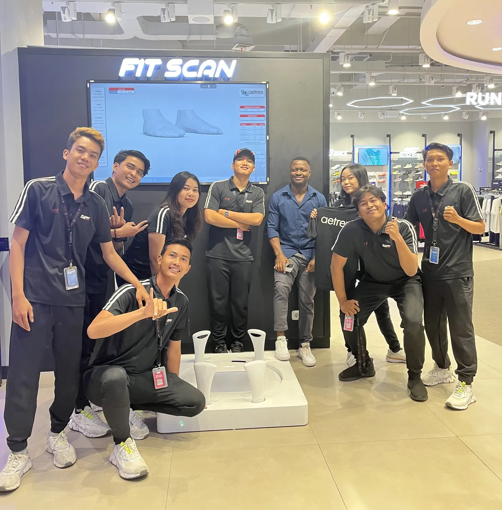
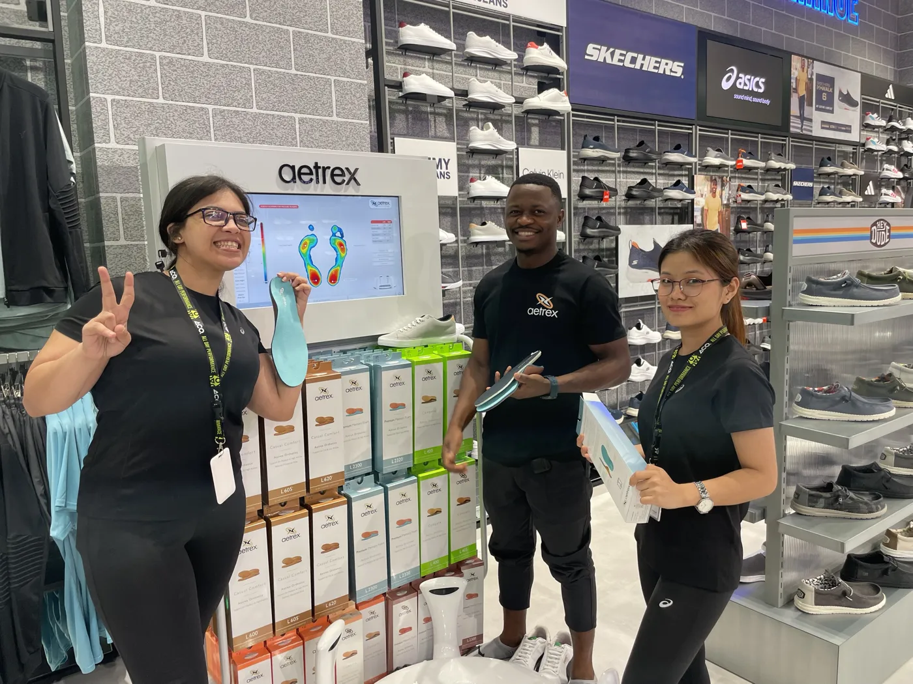
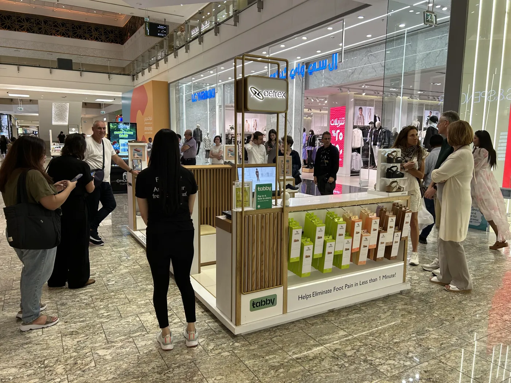
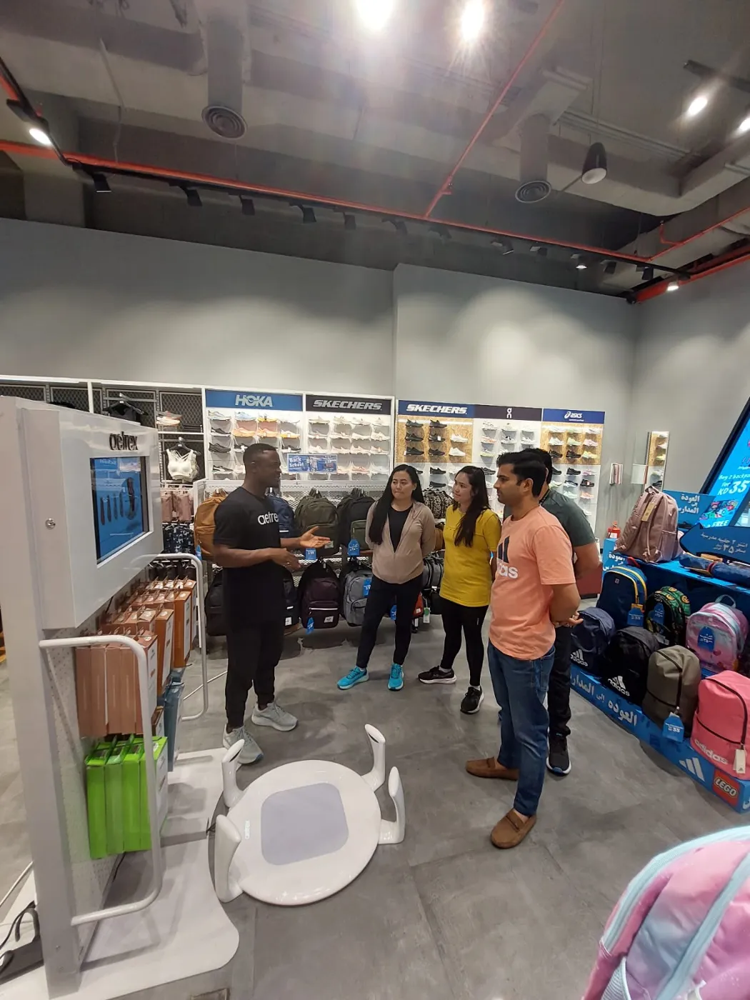
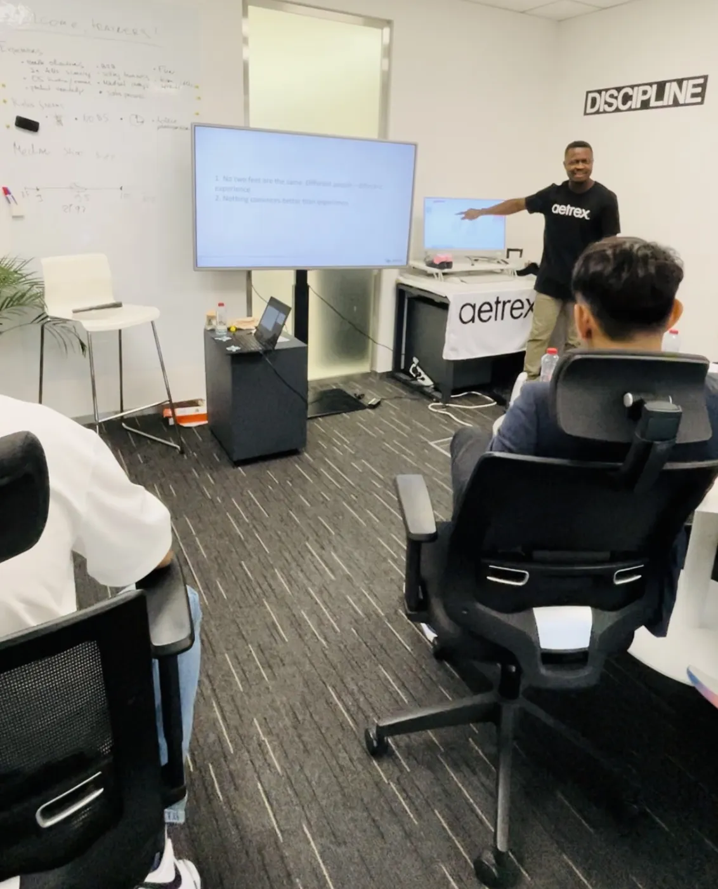

Scanner-led stores
The BrightPath Scan-to-Fit Method
Eight stages that turn a foot scanner into trusted conversations, confident fitting and consistent results across every shift. Built on years of launching scanning stores and training floor teams across the Middle East, Asia, Europe and Australia.

Why scanner stores underperform
A scanner is a significant investment. In the field, the same four problems come up again and again.
The scanner sits idle
Staff scan when it is quiet, or when a customer asks. Busy hours, the moments that matter most, go unscanned.
Staff talk about the machine
Features and numbers instead of the customer’s feet and goals. The customer is impressed but not convinced.
The data overwhelms
Pressure maps and measurements are read out, not explained. Some staff drift into medical language they shouldn’t use.
Insoles feel like a push
Support is offered as an add-on at the till, so customers hear a sales pitch rather than the rest of their fitting.
The eight stages
One customer journey, the same in every store. Each stage has a single goal, a clear standard of what good looks like, and the habits to avoid.
Welcome
A warm, unhurried greeting. Ask what brought them in today and how their current shoes feel. Offer the scan as a free fit check, never as a sales step.
Looks like: Open questions, eye contact, no product talk yet.
Avoid: Leading with the machine or a promotion.
Invite to scan
Explain that this is how the store fits every customer: shoes and socks off, about twenty seconds, and they see the results with you. Ask permission before you start, and before saving any profile.
Looks like: A clear yes, in the customer's own words.
Avoid: Assuming consent, or skipping the explanation.
The scan
Guide them onto the scanner, weight even, looking ahead. Narrate calmly while the scan runs, then turn the screen towards them as their feet appear.
Looks like: The customer watching their own feet, curious and relaxed.
Avoid: Talking over the scan or rushing to the next step.
Explain the data
Walk through length, width, volume, pressure and arch in plain, neutral words, linked to what they told you in the welcome. Retail scope only: no diagnosis, no alarming language.
Looks like: “That explains why my feet ache by evening.”
Avoid: Naming conditions or promising medical outcomes.
Match
Use the scan, and the scanner's fit-matching where your system has it, to shortlist footwear that suits the foot shape and the customer's activity.
Looks like: Two or three relevant options, not ten boxes.
Avoid: Letting the screen decide instead of the customer.
Recommend footwear
Bring two or three matched pairs. Fit the larger foot, check width and volume, then let them try, walk and compare. The scan explains the recommendation; the customer's feel confirms it.
Looks like: The customer chooses, and can say why.
Avoid: Defending a shoe that doesn't feel right.
Recommend support
Where the scan and the conversation show a need, offer the insole as the part of the fit the shoe can't do alone. Let them feel it with and without, and respect their decision either way.
Looks like: An informed yes or a respectful no.
Avoid: Pressure, urgency, or implying harm without it.
Natural close
Summarise the solution in their words, confirm the choice, and ask permission to save their profile for next time. Share simple aftercare and invite them back.
Looks like: A confident customer who knows what they bought and why.
Avoid: Rushing the close or skipping the aftercare.
Built in the field, not in a classroom
The method comes from launching scanning stores and training floor teams in real retail environments, then refining what worked.




Where the method was shaped
ASICS Middle EastRunners Middle EastApparel Group (ACO RUN)Reebok UAERegatta Canoe UAEAndy EnterprisesAetrex Middle EastMAP IndonesiaPrimer Group AsiaGlobal Footcare AU / NZ / SGIRUN Poland
Including a 12-day training tour across the Philippines, Singapore and Malaysia with Primer Group in 2024.
“He quickly grasped the business acumen of the footwear industry while also excelling at training and developing others to achieve meaningful, long-term results.”
Larry Schwartz, CEO, Aetrex, Inc. · December 2025. Quoted with permission from a letter of recommendation. Not an endorsement of BrightPath Academy by Aetrex.
How we bring it to your stores
Start small and prove it in one store, or roll it out across a network.
Scanner launch readiness
- Floor team training on the eight stages
- Role-play with your scanner and ranges
- A simple daily habit sheet for every shift
Academy Perform: 30-day pilot
- Up to five learners, three exercises a week
- A 20-minute manager review each week
- Baseline and closing scorecards
US$200 founding pilot, one-time. How the pilot works →
Enterprise rollout
- Multi-store implementation and manager development
- Train-the-trainer so the standard stays in-house
- Certified Fit Specialist pathway for key staff
What managers measure
Simple, consistent figures each week, kept separate from anyone’s credential.
Scans
How many customers were scanned.
Scan-to-insole conversion
Insole transactions linked to scans ÷ scans × 100.
Returns
Fit-related returns and exchanges.
Coaching completion
Practice exercises completed by the team.
Our professional boundaries
- Retail fitting and conversation only. No diagnosis or treatment.
- No medical claims, and no promises about what an insole will fix or prevent.
- Customers with ongoing pain or medical conditions are referred to a podiatrist or doctor.
- No pressure selling. A respectful no is a good conversation.
- Customer consent before scanning and before saving any profile.
- No customer health information in training records or scorecards.
Bring the Scan-to-Fit Method to your store
Start with a 30-day pilot in one store, or talk to us about a launch or rollout.